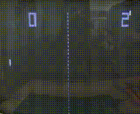

Data Engineering & Pipelines
Reliable dbt models and ETL/ELT workflows that turn raw, messy sources into clean, governed warehouse tables — because downstream models are only as good as the data feeding them.
• Data • Analytics • AI/ML
I turn messy data into pipelines, models, and dashboards people actually use — and I'm building toward AI/ML engineering.
01 About
I work at the intersection of data engineering, analytics and machine learning, building pipelines and tools that turn raw data into answers people can actually act on.
I started out in fintech, working on payments data at Webito, where a single duplicate transaction meant real money lost. Most recently I completed a Machine Learning Engineer co-op at METY Technology, and I’m finishing my Master’s in Data Analytics at Northeastern this December. Lately my focus is on where data meets AI: dbt pipelines, LLM-powered analysis tools and evaluating whether models actually get the right answer.
I’m looking for full-time roles across the data and AI stack, from building pipelines and dashboards to training and deploying ML models.
Data Professional · Data Engineering & Applied ML
02 Skills
Twenty-three elements in four families. Hover or tap a tile to see how I use it — or pick a family to light it up.
Reliable dbt models and ETL/ELT workflows that turn raw, messy sources into clean, governed warehouse tables — because downstream models are only as good as the data feeding them.
From feature engineering to evaluation, I build and validate models with scikit-learn and XGBoost — and I'm honest about what the metrics actually say, including when a model isn't production-ready.
Retrieval-augmented tools and text-to-SQL interfaces built on APIs like Groq, then evaluated for whether the answers hold up — bridging the gap between LLM demos and dependable analytics.
Governed datasets turned into Tableau and Power BI dashboards that stakeholders actually open — clear visuals, honest numbers, decision-ready.
03 Approach Lab
A practical view of the journey: raw data → cleaning & validation → pipelines & models → dashboards and decisions.
Payments data • Sales exports • Survey files
Small errors cost real money • Clean pipelines first
dbt • Warehouses • ML models that earn trust
Tableau • Power BI • LLM tools people use
04 Featured work
Four projects that show how I think — from pipeline to model to the person reading the dashboard. Hover a panel to open it.
AI-powered strategic analytics platform — upload sales data, ask questions in plain English, and get actionable insights.
Multi-source analytics pipeline on the link between opioid prescribing, overdose mortality, and socioeconomic vulnerability across U.S. states.
Feasibility study: can off-the-shelf ML services handle SMS spam detection? Tested on 5,572 messages.
AI-powered assistant for job applications, built with retrieval-augmented generation over your own documents.
05 Experience
Two stops, one through-line — turning messy data into pipelines, models and dashboards people can trust. Hover a card for a peek inside.
METY Technology
Webito · Fintech / Payments
Northeastern University
LDRP University
06 Projects
The rest of the archive — six more repos of experiments, pipelines, and tools, alongside the four featured projects above.
 Data Engineering
Data Engineering

Reinforcement Learning Machine Learning
Machine Learning
 Data Engineering
Data Engineering